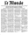

PMB OPAC icons
Serials icons-  article
 serial
serial
 printed text
printed text manuscript text
manuscript text musical score - printed
musical score - printed- musical score - manuscript
 map - printed
map - printed map - manuscript
map - manuscript video, projectable document
video, projectable document sound recording - non musical
sound recording - non musical sound recording - musical
sound recording - musical- 2D graphical document
 electronic document
electronic document multimedia document
multimedia document 3D object, artifact, ...
3D object, artifact, ...
Thesis only have their support icon.
For example :